Birds
 Birds are a group of warm-blooded vertebrates constituting the class Aves (/ˈeɪviːz
/), characterised by feathers, toothless beaked jaws, the laying of hard-shelled eggs
, a high metabolic rate, a four-chambered heart, and a strong yet lightweight
skeleton. Birds live worldwide and range in size from the 5.5 cm (2.2 in) bee
hummingbird to the 2.8 m (9 ft 2 in) ostrich. There are about ten thousand living
species, more than half of which are passerine, or "perching" birds. Birds have
wings whose development varies according to species; the only known groups without
wings are the extinct moa and elephant birds. Wings, which are modified forelimbs,
gave birds the ability to fly, although further evolution has led to the loss of
flight in some birds, including ratites, penguins, and diverse endemic island
species. The digestive and respiratory systems of birds are also uniquely adapted
for flight. Some bird species of aquatic environments, particularly seabirds and
some waterbirds, have further evolved for swimming.Birds are feathered theropod
dinosaurs and constitute the only known living dinosaurs. Likewise, birds are
considered reptiles in the modern cladistic sense of the term, and their closest
living relatives are the crocodilians. Birds are descendants of the primitive
avialans (whose members include Archaeopteryx) which first appeared about 160
million years ago (mya) in China. According to DNA evidence, modern birds
(Neornithes) evolved in the Middle to Late Cretaceous, and diversified dramatically
around the time of the Cretaceous–Paleogene extinction event 66 mya, which killed
off the pterosaurs and all non-avian dinosaurs.Many social species pass on knowledge
across generations, which is considered a form of culture. Birds are social,
communicating with visual signals, calls, and songs, and participating in such
behaviours as cooperative breeding and hunting, flocking, and mobbing of predators.
The vast majority of bird species are socially (but not necessarily sexually)
monogamous, usually for one breeding season at a time, sometimes for years, and
rarely for life. Other species have breeding systems that are polygynous (one male
with many females) or, rarely, polyandrous (one female with many males). Birds
produce offspring by laying eggs which are fertilised through sexual reproduction.
They are usually laid in a nest and incubated by the parents. Most birds have an
extended period of parental care after hatching.Many species of birds are
economically important as food for human consumption and raw material in
manufacturing, with domesticated and undomesticated birds being important sources of
eggs, meat, and feathers. Songbirds, parrots, and other species are popular as pets.
Guano (bird excrement) is harvested for use as a fertiliser. Birds figure throughout
human culture. About 120 to 130 species have become extinct due to human activity
since the 17th century, and hundreds more before then. Human activity threatens
about 1,200 bird species with extinction, though efforts are underway to protect
them. Recreational birdwatching is an important part of the ecotourism industry.
Birds are a group of warm-blooded vertebrates constituting the class Aves (/ˈeɪviːz
/), characterised by feathers, toothless beaked jaws, the laying of hard-shelled eggs
, a high metabolic rate, a four-chambered heart, and a strong yet lightweight
skeleton. Birds live worldwide and range in size from the 5.5 cm (2.2 in) bee
hummingbird to the 2.8 m (9 ft 2 in) ostrich. There are about ten thousand living
species, more than half of which are passerine, or "perching" birds. Birds have
wings whose development varies according to species; the only known groups without
wings are the extinct moa and elephant birds. Wings, which are modified forelimbs,
gave birds the ability to fly, although further evolution has led to the loss of
flight in some birds, including ratites, penguins, and diverse endemic island
species. The digestive and respiratory systems of birds are also uniquely adapted
for flight. Some bird species of aquatic environments, particularly seabirds and
some waterbirds, have further evolved for swimming.Birds are feathered theropod
dinosaurs and constitute the only known living dinosaurs. Likewise, birds are
considered reptiles in the modern cladistic sense of the term, and their closest
living relatives are the crocodilians. Birds are descendants of the primitive
avialans (whose members include Archaeopteryx) which first appeared about 160
million years ago (mya) in China. According to DNA evidence, modern birds
(Neornithes) evolved in the Middle to Late Cretaceous, and diversified dramatically
around the time of the Cretaceous–Paleogene extinction event 66 mya, which killed
off the pterosaurs and all non-avian dinosaurs.Many social species pass on knowledge
across generations, which is considered a form of culture. Birds are social,
communicating with visual signals, calls, and songs, and participating in such
behaviours as cooperative breeding and hunting, flocking, and mobbing of predators.
The vast majority of bird species are socially (but not necessarily sexually)
monogamous, usually for one breeding season at a time, sometimes for years, and
rarely for life. Other species have breeding systems that are polygynous (one male
with many females) or, rarely, polyandrous (one female with many males). Birds
produce offspring by laying eggs which are fertilised through sexual reproduction.
They are usually laid in a nest and incubated by the parents. Most birds have an
extended period of parental care after hatching.Many species of birds are
economically important as food for human consumption and raw material in
manufacturing, with domesticated and undomesticated birds being important sources of
eggs, meat, and feathers. Songbirds, parrots, and other species are popular as pets.
Guano (bird excrement) is harvested for use as a fertiliser. Birds figure throughout
human culture. About 120 to 130 species have become extinct due to human activity
since the 17th century, and hundreds more before then. Human activity threatens
about 1,200 bird species with extinction, though efforts are underway to protect
them. Recreational birdwatching is an important part of the ecotourism industry.
Evolution and classification
The first classification of birds was developed by Francis
Willughby and John Ray in their 1676 volume Ornithologiae.Carl
Linnaeus modified that work in 1758 to devise the taxonomic
classification system currently in use.Birds are categorised as the
biological class Aves in Linnaean taxonomy. Phylogenetic taxonomy
places Aves in the clade Theropoda.
Definition
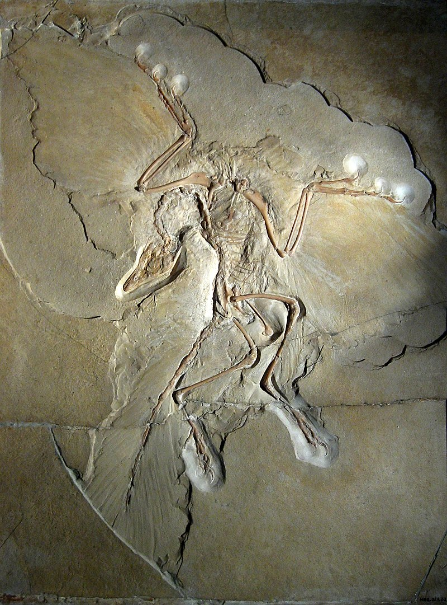
Aves and a sister group, the order Crocodilia, contain the only
living representatives of the reptile clade Archosauria. During the
late 1990s, Aves was most commonly defined phylogenetically as all
descendants of the most recent common ancestor of modern birds and
Archaeopteryx lithographica.However, an earlier definition proposed by
Jacques Gauthier gained wide currency in the 21st century, and is used
by many scientists including adherents to the PhyloCode. Gauthier
defined Aves to include only the crown group of the set of modern
birds. This was done by excluding most groups known only from fossils,
and assigning them, instead, to the broader group Avialae,in part to
avoid the uncertainties about the placement of Archaeopteryx in
relation to animals traditionally thought of as theropod dinosaurs.
[citation needed]Gauthier and de Queiroz identified four different
definitions for the same biological name "Aves", which is a problem.
The authors proposed to reserve the term Aves only for the crown group
consisting of the last common ancestor of all living birds and all of
its descendants, which corresponds to meaning number 4 below. He
assigned other names to the other groups.
1.Aves can mean all archosaurs closer to birds than to crocodiles
(alternately Avemetatarsalia).
2.Aves can mean those advanced archosaurs with feathers (alternately Avifilopluma).
3.Aves can mean those feathered dinosaurs that fly (alternately Avialae).
4.Aves can mean the last common ancestor of all the currently living
birds and all of its descendants (a "crown group", in this sense
synonymous with Neornithes).
Under the fourth definition Archaeopteryx,
traditionally considered one of the earliest members of Aves, is
removed from this group, becoming a non-avian dinosaur instead. These
proposals have been adopted by many researchers in the field of
palaeontology and bird evolution, though the exact definitions applied
have been inconsistent. Avialae, initially proposed to replace the
traditional fossil content of Aves, is often used synonymously with
the vernacular term "bird" by these researchers.Most researchers
define Avialae as branch-based clade, though definitions vary. Many
authors have used a definition similar to "all theropods closer to
birds than to Deinonychus",with Troodon being sometimes added as a
second external specifier in case it is closer to birds than to
Deinonychus.Avialae is also occasionally defined as an apomorphy-based
clade (that is, one based on physical characteristics). Jacques
Gauthier, who named Avialae in 1986, re-defined it in 2001 as all
dinosaurs that possessed feathered wings used in flapping flight, and
the birds that descended from them.Despite being currently one of the
most widely used, the crown-group definition of Aves has been
criticised by some researchers. Lee and Spencer (1997) argued that,
contrary to what Gauthier defended, this definition would not increase
the stability of the clade and the exact content of Aves will always
be uncertain because any defined clade (either crown or not) will have
few synapomorphies distinguishing it from its closest relatives. Their
alternative definition is synonymous to Avifilopluma.
Dinosaurs and the origin of birds
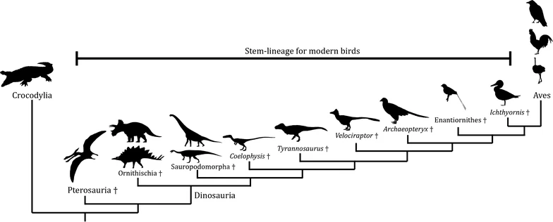
Based on fossil and biological evidence, most scientists accept that
birds are a specialised subgroup of theropod dinosaurs and, more
specifically, members of Maniraptora, a group of theropods which
includes dromaeosaurids and oviraptorosaurs, among others.As scientists
have discovered more theropods closely related to birds, the previously
clear distinction between non-birds and birds has become blurred. Recent
discoveries in the Liaoning Province of northeast China, which
demonstrate many small theropod feathered dinosaurs, contribute to this
ambiguity.
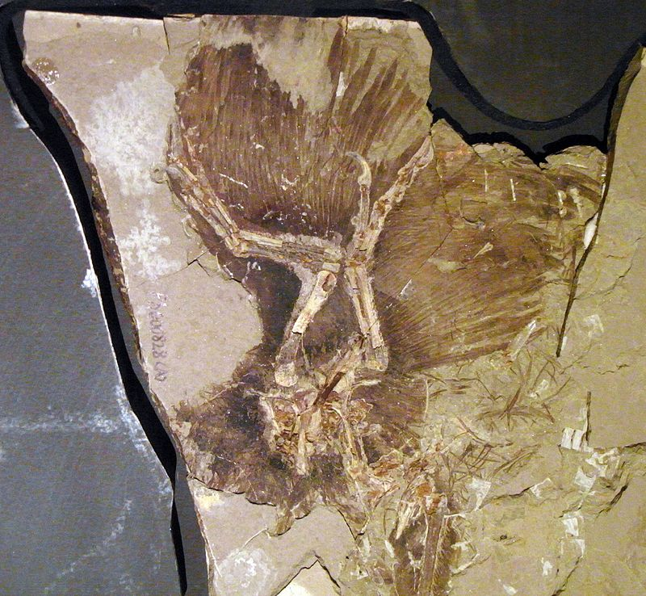
The consensus view in contemporary palaeontology is that the flying
theropods, or avialans, are the closest relatives of the deinonychosaurs,
which include dromaeosaurids and troodontids.Together, these form a group
called Paraves. Some basal members of Deinonychosauria, such as
Microraptor, have features which may have enabled them to glide or fly.
The most basal deinonychosaurs were very small. This evidence raises the
possibility that the ancestor of all paravians may have been arboreal,
have been able to glide, or both.Unlike Archaeopteryx and the non-avialan
feathered dinosaurs, who primarily ate meat, recent studies suggest that
the first avialans were omnivores.The Late Jurassic Archaeopteryx is well
known as one of the first transitional fossils to be found, and it
provided support for the theory of evolution in the late 19th century.
Archaeopteryx was the first fossil to display both clearly traditional
reptilian characteristics—teeth, clawed fingers, and a long, lizard-like
tail—as well as wings with flight feathers similar to those of modern
birds. It is not considered a direct ancestor of birds, though it is
possibly closely related to the true ancestor.
Early evolution
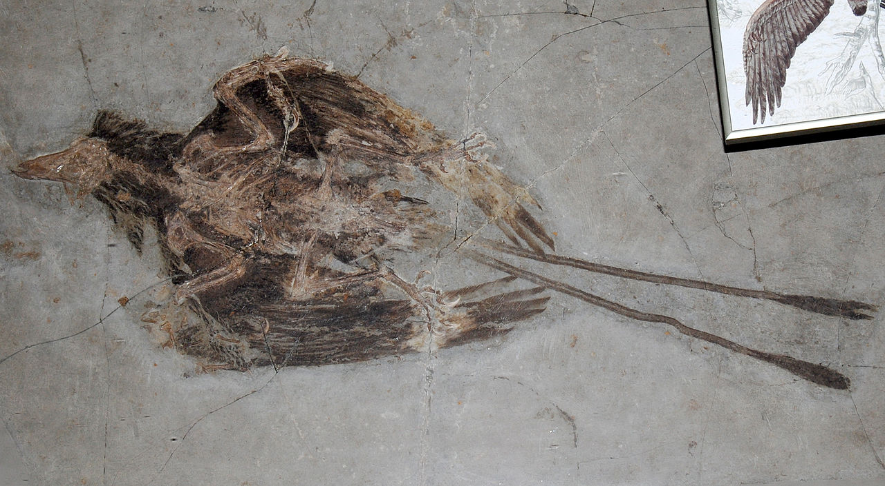
Over 40% of key traits found in modern birds evolved during the 60
million year transition from the earliest bird-line archosaurs to the first
maniraptoromorphs, i.e. the first dinosaurs closer to living birds than to
Tyrannosaurus rex. The loss of osteoderms otherwise common in archosaurs and
acquisition of primitive feathers might have occurred early during this
phase.[14][34] After the appearance of Maniraptoromorpha, the next 40
million years marked a continuous reduction of body size and the
accumulation of neotenic (juvenile-like) characteristics. Hypercarnivory
became increasingly less common while braincases enlarged and forelimbs
became longer.The integument evolved into complex, pennaceous feathers.
The oldest known paravian (and probably the earliest avialan) fossils come
from the Tiaojishan Formation of China, which has been dated to the late
Jurassic period (Oxfordian stage), about 160 million years ago. The avialan
species from this time period include Anchiornis huxleyi, Xiaotingia zhengi,
and Aurornis xui.The well-known probable early avialan, Archaeopteryx, dates
from slightly later Jurassic rocks (about 155 million years old) from
Germany. Many of these early avialans shared unusual anatomical features
that may be ancestral to modern birds, but were later lost during bird
evolution. These features include enlarged claws on the second toe which may
have been held clear of the ground in life, and long feathers or "hind
wings" covering the hind limbs and feet, which may have been used in aerial
manoeuvreing.Avialans diversified into a wide variety of forms during the
Cretaceous period. Many groups retained primitive characteristics, such as
clawed wings and teeth, though the latter were lost independently in a
number of avialan groups, including modern birds (Aves).Increasingly stiff
tails (especially the outermost half) can be seen in the evolution of
maniraptoromorphs, and this process culminated in the appearance of the
pygostyle, an ossification of fused tail vertebrae.In the late Cretaceous,
about 100 million years ago, the ancestors of all modern birds evolved a
more open pelvis, allowing them to lay larger eggs compared to body size.
Around 95 million years ago, they evolved a better sense of smell.A third
stage of bird evolution starting with Ornithothoraces (the "bird-chested"
avialans) can be associated with the refining of aerodynamics and flight
capabilities, and the loss or co-ossification of several skeletal features.
Particularly significant are the development of an enlarged, keeled sternum
and the alula, and the loss of grasping hands.
Early diversity of bird ancestors
The first large, diverse lineage of short-tailed avialans to evolve were
the Enantiornithes, or "opposite birds", so named because the construction
of their shoulder bones was in reverse to that of modern birds.
Enantiornithes occupied a wide array of ecological niches, from sand-probing
shorebirds and fish-eaters to tree-dwelling forms and seed-eaters. While
they were the dominant group of avialans during the Cretaceous period,
enantiornithes became extinct along with many other dinosaur groups at the
end of the Mesozoic era.Many species of the second major avialan lineage to
diversify, the Euornithes (meaning "true birds", because they include the
ancestors of modern birds), were semi-aquatic and specialised in eating fish
and other small aquatic organisms. Unlike the Enantiornithes, which
dominated land-based and arboreal habitats, most early euornithes lacked
perching adaptations and seem to have included shorebird-like species,
waders, and swimming and diving species.[citation needed]The latter included
the superficially gull-like Ichthyornis and the Hesperornithiformes, which
became so well adapted to hunting fish in marine environments that they lost
the ability to fly and became primarily aquatic. The early euornithes also
saw the development of many traits associated with modern birds, like
strongly keeled breastbones, toothless, beaked portions of their jaws
(though most non-avian euornithes retained teeth in other parts of the jaws).
Euornithes also included the first avialans to develop true pygostyle and a
fully mobile fan of tail feathers,which may have replaced the "hind wing" as
the primary mode of aerial maneuverability and braking in flight.A study on
mosaic evolution in the avian skull found that the last common ancestor of
all Neornithes might have had a beak similar to that of the modern
hook-billed vanga and a skull similar to that of the Eurasian golden oriole.
As both species are small aerial and canopy foraging omnivores, a similar
ecological niche was inferred for this hypothetical ancestor.
Diversification of modern birds
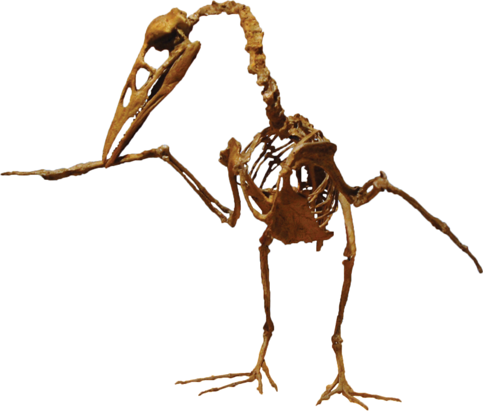
All modern birds lie within the crown group Aves (alternately Neornithes),
which has two subdivisions: the Palaeognathae, which includes the flightless
ratites (such as the ostriches) and the weak-flying tinamous, and the
extremely diverse Neognathae, containing all other birds.These two
subdivisions have variously been given the rank of superorder,cohort,or
infraclass.Depending on the taxonomic viewpoint, the number of known living
bird species varies anywhere from 9,800 to 10,758.The discovery of Vegavis
from the Maastrichtian, the last stage of the Late Cretaceous proved that the
diversification of modern birds started before the Cenozoic era.The affinities
of an earlier fossil, the possible galliform Austinornis lentus, dated to
about 85 million years ago,are still too controversial to provide a fossil
evidence of modern bird diversification. In 2020, Asteriornis from the
Maastrichtian was described, it appears to be a close relative of
Galloanserae, the earliest diverging lineage within Neognathae.Most studies
agree on a Cretaceous age for the most recent common ancestor of modern birds
but estimates range from the Early Cretaceous to the latest Late Cretaceous.
Similarly, there is no agreement on whether most of the early diversification
of modern birds occurred before or after the Cretaceous–Palaeogene extinction
event.This disagreement is in part caused by a divergence in the evidence;
most molecular dating studies suggests a Cretaceous evolutionary radiation,
while fossil evidence points to a Cenozoic radiation (the so-called 'rocks'
versus 'clocks' controversy). Previous attempts to reconcile molecular and
fossil evidence have proved controversial,but more recent estimates, using a
more comprehensive sample of fossils and a new way of calibrating molecular
clocks, showed that while according to some studies, modern birds originated
early in the Late Cretaceous in Western Gondwana, a pulse of diversification
in all major groups occurred around the Cretaceous–Palaeogene extinction
event. Modern birds expanded from West Gondwana to the Laurasia through two
routes. One route was an Antarctic interchange in the Paleogene. This can be
confirmed with the presence of multiple avian groups in Australia and New
Zealand. The other route was probably through North America, via land bridges,
during the Paleocene. This allowed the expansion and diversification of
Neornithes into the Holarctic and Paleotropics. On the other hand, the
occurrence of Asteriornis in the Northern Hemisphere challenges
biogeographical hypotheses of a Gondwanan origin of crown birds.
Genomics
As of 2010, the genome had been sequenced for only two birds, the chicken
and the zebra finch. As of 2022 the genomes of 542 species of birds had been
completed. At least one genome has been sequenced from every order.These
include at least one species in about 90% of extant avian families (218 out
of 236 families recognised by the Howard and Moore Checklist).Being able to
sequence and compare whole genomes gives researchers many types of
information, about genes, the DNA that regulates the genes, and their
evolutionary history. This has led to reconsideration of some of the
classifications that were based solely on the identification of protein-
coding genes. Waterbirds such as pelicans and flamingos, for example, may
have in common specific adaptations suited to their environment that were
developed independently.
Distribution
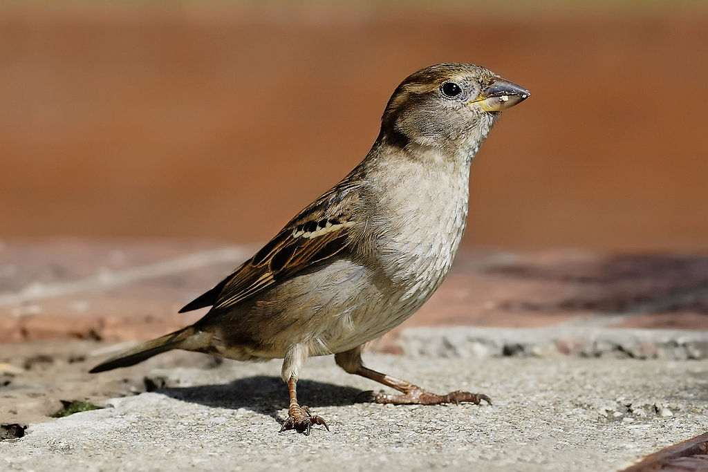
Birds live and breed in most terrestrial habitats and on all seven
continents, reaching their southern extreme in the snow petrel's breeding
colonies up to 440 kilometres (270 mi) inland in Antarctica.The highest bird
diversity occurs in tropical regions. It was earlier thought that this high
diversity was the result of higher speciation rates in the tropics; however
recent studies found higher speciation rates in the high latitudes that were
offset by greater extinction rates than in the tropics.Many species migrate
annually over great distances and across oceans; several families of birds
have adapted to life both on the world's oceans and in them, and some seabird
species come ashore only to breed,while some penguins have been recorded
diving up to 300 metres (980 ft) deep.Many bird species have established
breeding populations in areas to which they have been introduced by humans.
Some of these introductions have been deliberate; the ring-necked pheasant,
for example, has been introduced around the world as a game bird.Others have
been accidental, such as the establishment of wild monk parakeets in several
North American cities after their escape from captivity.Some species,
including cattle egret, yellow-headed caracara and galah, have spread
naturally far beyond their original ranges as agricultural expansion created
alternative habitats although modern practices of intensive agriculture have
negatively impacted farmland bird populations.
Anatomy and physiology
Compared with other vertebrates, birds have a body plan that shows many
unusual adaptations, mostly to facilitate flight.
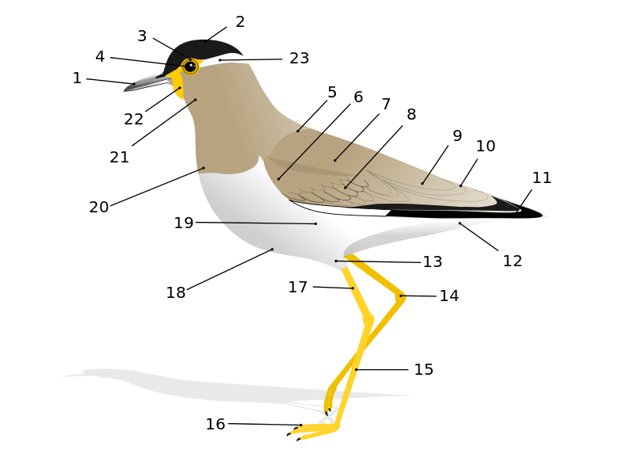
Skeletal system
The skeleton consists of very lightweight bones. They have large air-filled
cavities (called pneumatic cavities) which connect with the respiratory system.
The skull bones in adults are fused and do not show cranial sutures.The
orbital cavities that house the eyeballs are large and separated from each
other by a bony septum (partition). The spine has cervical, thoracic, lumbar
and caudal regions with the number of cervical (neck) vertebrae highly
variable and especially flexible, but movement is reduced in the anterior
thoracic vertebrae and absent in the later vertebrae.The last few are fused
with the pelvis to form the synsacrum. The ribs are flattened and the sternum
is keeled for the attachment of flight muscles except in the flightless bird
orders. The forelimbs are modified into wings. The wings are more or less
developed depending on the species; the only known groups that lost their
wings are the extinct moa and elephant birds.
Excretory system
Like the reptiles, birds are primarily uricotelic, that is, their kidneys
extract nitrogenous waste from their bloodstream and excrete it as uric
acid, instead of urea or ammonia, through the ureters into the intestine.
Birds do not have a urinary bladder or external urethral opening and (with
exception of the ostrich) uric acid is excreted along with faeces as a
semisolid waste.However, birds such as hummingbirds can be facultatively
ammonotelic, excreting most of the nitrogenous wastes as ammonia.They also
excrete creatine, rather than creatinine like mammals.This material, as
well as the output of the intestines, emerges from the bird's cloaca. The
cloaca is a multi-purpose opening: waste is expelled through it, most birds
mate by joining cloaca, and females lay eggs from it. In addition, many
species of birds regurgitate pellets.It is a common but not universal
feature of altricial passerine nestlings (born helpless, under constant
parental care) that instead of excreting directly into the nest, they
produce a fecal sac. This is a mucus-covered pouch that allows parents to
either dispose of the waste outside the nest or to recycle the waste through
their own digestive system.
Reproductive system
Males within Palaeognathae (with the exception of the kiwis), the
Anseriformes (with the exception of screamers), and in rudimentary forms in
Galliformes (but fully developed in Cracidae) possess a penis, which is
never present in Neoaves.The length is thought to be related to sperm
competition.When not copulating, it is hidden within the proctodeum
compartment within the cloaca, just inside the vent. Female birds have sperm
storage tubules that allow sperm to remain viable long after copulation, a
hundred days in some species. Sperm from multiple males may compete
through this mechanism. Most female birds have a single ovary and a single
oviduct, both on the left side, but there are exceptions: species in at
least 16 different orders of birds have two ovaries. Even these species,
however, tend to have a single oviduct.It has been speculated that this
might be an adaptation to flight, but males have two testes, and it is also
observed that the gonads in both sexes decrease dramatically in size outside
the breeding season.Also terrestrial birds generally have a single ovary, as
does the platypus, an egg-laying mammal. A more likely explanation is that
the egg develops a shell while passing through the oviduct over a period of
about a day, so that if two eggs were to develop at the same time, there
would be a risk to survival.While rare, mostly abortive, parthenogenesis is
not unknown in birds and eggs can be diploid, automictic and results in male
offspring.Birds are solely gonochoric.Meaning they have two sexes: either
female or male. The sex of birds is determined by the Z and W sex
chromosomes, rather than by the X and Y chromosomes present in mammals. Male
birds have two Z chromosomes (ZZ), and female birds have a W chromosome and
a Z chromosome (WZ).In nearly all species of birds, an individual's sex is
determined at fertilisation. However, one 2007 study claimed to demonstrate
temperature-dependent sex determination among the Australian brushturkey,
for which higher temperatures during incubation resulted in a higher
female-to-male sex ratio.This, however, was later proven to not be the case.
These birds do not exhibit temperature-dependent sex determination, but
temperature-dependent sex mortality.
Respiratory and circulatory systems
Birds have one of the most complex respiratory systems of all animal groups.
Upon inhalation, 75% of the fresh air bypasses the lungs and flows directly
into a posterior air sac which extends from the lungs and connects with air
spaces in the bones and fills them with air. The other 25% of the air goes
directly into the lungs. When the bird exhales, the used air flows out of
the lungs and the stored fresh air from the posterior air sac is
simultaneously forced into the lungs. Thus, a bird's lungs receive a
constant supply of fresh air during both inhalation and exhalation. Sound
production is achieved using the syrinx, a muscular chamber incorporating
multiple tympanic membranes which diverges from the lower end of the trachea;
the trachea being elongated in some species, increasing the volume of
vocalisations and the perception of the bird's size.In birds, the main
arteries taking blood away from the heart originate from the right aortic
arch (or pharyngeal arch), unlike in the mammals where the left aortic arch
forms this part of the aorta.The postcava receives blood from the limbs
via the renal portal system. Unlike in mammals, the circulating red blood
cells in birds retain their nucleus.
Heart type and features
The avian circulatory system is driven by a four-chambered, myogenic heart
contained in a fibrous pericardial sac. This pericardial sac is filled with a
serous fluid for lubrication.The heart itself is divided into a right
and left half, each with an atrium and ventricle. The atrium and ventricles of
each side are separated by atrioventricular valves which prevent back flow
from one chamber to the next during contraction. Being myogenic, the heart's
pace is maintained by pacemaker cells found in the sinoatrial node, located on
the right atrium.[citation needed] The sinoatrial node uses calcium to cause a
depolarising signal transduction pathway from the atrium through right and
left atrioventricular bundle which communicates contraction to the ventricles.
The avian heart also consists of muscular arches that are made up of thick
bundles of muscular layers. Much like a mammalian heart, the avian heart is
composed of endocardial, myocardial and epicardial layers.The atrium walls
tend to be thinner than the ventricle walls, due to the intense ventricular
contraction used to pump oxygenated blood throughout the body. Avian hearts
are generally larger than mammalian hearts when compared to body mass. This
adaptation allows more blood to be pumped to meet the high metabolic need
associated with flight.
Organisation
Birds have a very efficient system for diffusing oxygen into the blood;
birds have a ten times greater surface area to gas exchange volume than
mammals. As a result, birds have more blood in their capillaries per unit of
volume of lung than a mammal.The arteries are composed of thick elastic
muscles to withstand the pressure of the ventricular contractions, and
become more rigid as they move away from the heart. Blood moves through the
arteries, which undergo vasoconstriction, and into arterioles which act as a
transportation system to distribute primarily oxygen as well as nutrients to
all tissues of the body.As the arterioles move away from the heart and
into individual organs and tissues they are further divided to increase
surface area and slow blood flow. Blood travels through the arterioles and
moves into the capillaries where gas exchange can occur.[citation needed]
Capillaries are organised into capillary beds in tissues; it is here that
blood exchanges oxygen for carbon dioxide waste. In the capillary beds,
blood flow is slowed to allow maximum diffusion of oxygen into the tissues.
Once the blood has become deoxygenated, it travels through venules then
veins and back to the heart. Veins, unlike arteries, are thin and rigid as
they do not need to withstand extreme pressure. As blood travels through the
venules to the veins a funneling occurs called vasodilation bringing blood
back to the heart.Once the blood reaches the heart, it moves first into the
right atrium, then the right ventricle to be pumped through the lungs for
further gas exchange of carbon dioxide waste for oxygen. Oxygenated blood
then flows from the lungs through the left atrium to the left ventricle
where it is pumped out to the body.
Nervous system
The nervous system is large relative to the bird's size.The most developed
part of the brain is the one that controls the flight-related functions,
while the cerebellum coordinates movement and the cerebrum controls
behaviour patterns, navigation, mating and nest building. Most birds have a
poor sense of smell with notable exceptions including kiwis,New World
vultures and tubenoses. The avian visual system is usually highly
developed. Water birds have special flexible lenses, allowing accommodation
for vision in air and water. Some species also have dual fovea. Birds
are tetrachromatic, possessing ultraviolet (UV) sensitive cone cells in the
eye as well as green, red and blue ones.They also have double cones, likely
to mediate achromatic vision.
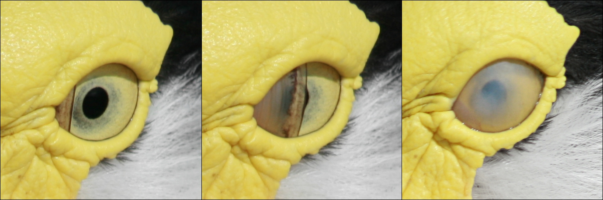
Many birds show plumage patterns in ultraviolet that are invisible to the
human eye; some birds whose sexes appear similar to the naked eye are
distinguished by the presence of ultraviolet reflective patches on their
feathers. Male blue tits have an ultraviolet reflective crown patch which is
displayed in courtship by posturing and raising of their nape feathers.
Ultraviolet light is also used in foraging—kestrels have been shown to search
for prey by detecting the UV reflective urine trail marks left on the ground
by rodents.With the exception of pigeons and a few other species, the eyelids
of birds are not used in blinking. Instead the eye is lubricated by the
nictitating membrane, a third eyelid that moves horizontally.The nictitating
membrane also covers the eye and acts as a contact lens in many aquatic birds.
The bird retina has a fan shaped blood supply system called the pecten.
Eyes of most birds are large, not very round and capable of only limited
movement in the orbits,typically 10–20°. Birds with eyes on the sides of
their heads have a wide visual field, while birds with eyes on the front of
their heads, such as owls, have binocular vision and can estimate the depth
of field.The avian ear lacks external pinnae but is covered by feathers,
although in some birds, such as the Asio, Bubo and Otus owls, these feathers
form tufts which resemble ears. The inner ear has a cochlea, but it is not
spiral as in mammals.
Defence and intraspecific combat
A few species are able to use chemical defences against predators; some
Procellariiformes can eject an unpleasant stomach oil against an aggressor,
and some species of pitohuis from New Guinea have a powerful neurotoxin in
their skin and feathers.A lack of field observations limit our knowledge,
but intraspecific conflicts are known to sometimes result in injury or death.
The screamers (Anhimidae), some jacanas (Jacana, Hydrophasianus), the
spur-winged goose (Plectropterus), the torrent duck (Merganetta) and nine
species of lapwing (Vanellus) use a sharp spur on the wing as a weapon. The
steamer ducks (Tachyeres), geese and swans (Anserinae), the solitaire
(Pezophaps), sheathbills (Chionis), some guans (Crax) and stone curlews
(Burhinus) use a bony knob on the alular metacarpal to punch and hammer
opponents.The jacanas Actophilornis and Irediparra have an expanded,
blade-like radius. The extinct Xenicibis was unique in having an elongate
forelimb and massive hand which likely functioned in combat or defence as a
jointed club or flail. Swans, for instance, may strike with the bony spurs
and bite when defending eggs or young.
Feathers, plumage, and scales
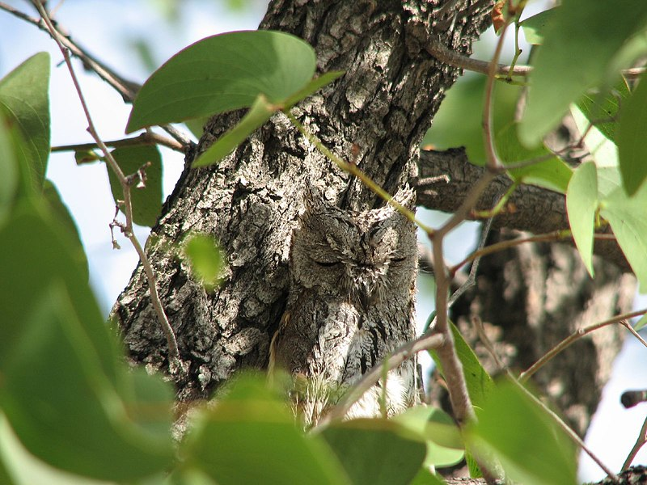
Feathers are a feature characteristic of birds (though also present in
some dinosaurs not currently considered to be true birds). They facilitate
flight, provide insulation that aids in thermoregulation, and are used in
display, camouflage, and signalling.There are several types of feathers, each
serving its own set of purposes. Feathers are epidermal growths attached to
the skin and arise only in specific tracts of skin called pterylae. The
distribution pattern of these feather tracts (pterylosis) is used in taxonomy
and systematics. The arrangement and appearance of feathers on the body,
called plumage, may vary within species by age, social status, and sex.
Plumage is regularly moulted; the standard plumage of a bird that has moulted
after breeding is known as the "non-breeding" plumage, or—in the
Humphrey–Parkes terminology—"basic" plumage; breeding plumages or variations
of the basic plumage are known under the Humphrey–Parkes system as "alternate"
plumages.Moulting is annual in most species, although some may have two moults
a year, and large birds of prey may moult only once every few years. Moulting
patterns vary across species. In passerines, flight feathers are replaced one
at a time with the innermost primary being the first. When the fifth of sixth
primary is replaced, the outermost tertiaries begin to drop. After the
innermost tertiaries are moulted, the secondaries starting from the innermost
begin to drop and this proceeds to the outer feathers (centrifugal moult). The
greater primary coverts are moulted in synchrony with the primary that they
overlap.A small number of species, such as ducks and geese, lose all of their
flight feathers at once, temporarily becoming flightless. As a general rule,
the tail feathers are moulted and replaced starting with the innermost pair.
Centripetal moults of tail feathers are however seen in the Phasianidae. The
centrifugal moult is modified in the tail feathers of woodpeckers and
treecreepers, in that it begins with the second innermost pair of feathers and
finishes with the central pair of feathers so that the bird maintains a
functional climbing tail.The general pattern seen in passerines is
that the primaries are replaced outward, secondaries inward, and the tail from
centre outward. Before nesting, the females of most bird species gain a bare
brood patch by losing feathers close to the belly. The skin there is well
supplied with blood vessels and helps the bird in incubation.
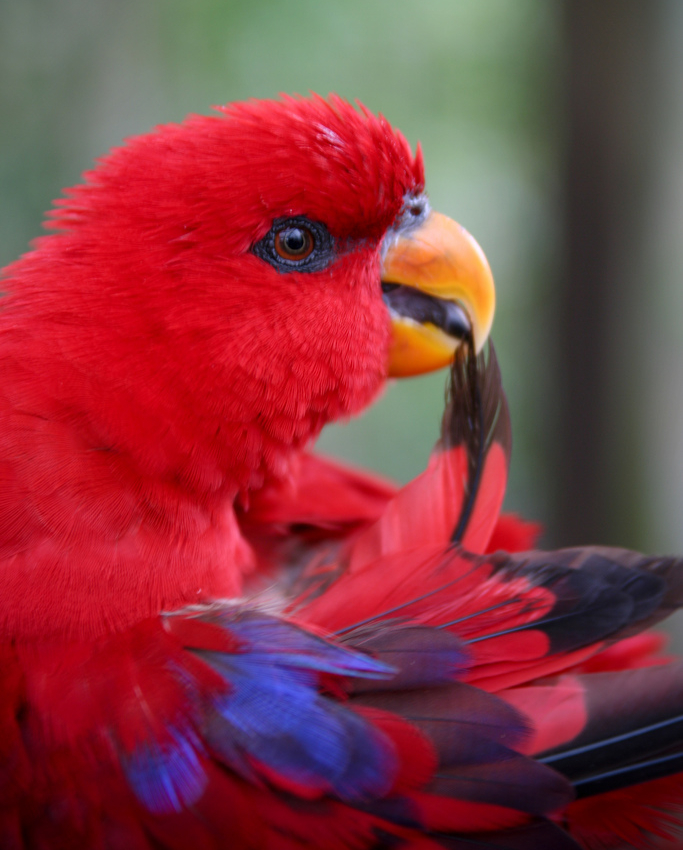
Feathers require maintenance and birds preen or groom them daily, spending
an average of around 9% of their daily time on this.The bill is used to brush
away foreign particles and to apply waxy secretions from the uropygial gland;
these secretions protect the feathers' flexibility and act as an antimicrobial
agent, inhibiting the growth of feather-degrading bacteria.This may be
supplemented with the secretions of formic acid from ants, which birds receive
through a behaviour known as anting, to remove feather parasites.The scales of
birds are composed of the same keratin as beaks, claws, and spurs. They are
found mainly on the toes and metatarsus, but may be found further up on the
ankle in some birds. Most bird scales do not overlap significantly, except in
the cases of kingfishers and woodpeckers. The scales of birds are thought to
be homologous to those of reptiles and mammals.
Flight
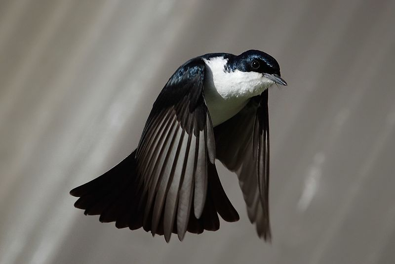
Most birds can fly, which distinguishes them from almost all other
vertebrate classes. Flight is the primary means of locomotion for most bird
species and is used for searching for food and for escaping from predators.
Birds have various adaptations for flight, including a lightweight skeleton,
two large flight muscles, the pectoralis (which accounts for 15% of the total
mass of the bird) and the supracoracoideus, as well as a modified forelimb
(wing) that serves as an aerofoil.Wing shape and size generally determine a
bird's flight style and performance; many birds combine powered, flapping
flight with less energy-intensive soaring flight. About 60 extant bird species
are flightless, as were many extinct birds.Flightlessness often arises in
birds on isolated islands, most likely due to limited resources and the
absence of mammalian land predators.Flightlessnes is almost exclusively
correlated with gigantism due to an island's inheren condition of isolation.
Although flightless, penguins use similar musculature and movements to "fly"
through the water, as do some flight-capable birds such as auks, shearwaters
and dippers.
Behaviour
Most birds are diurnal, but some birds, such as many species of owls and
nightjars, are nocturnal or crepuscular (active during twilight hours), and
many coastal waders feed when the tides are appropriate, by day or night.
Diet and feeding
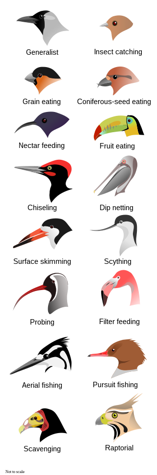
Birds' diets are varied and often include nectar, fruit, plants, seeds,
carrion, and various small animals, including other birds.The digestive system
of birds is unique, with a crop for storage and a gizzard that contains
swallowed stones for grinding food to compensate for the lack of teeth.Some
species such as pigeons and some psittacine species do not have a gallbladder.
Most birds are highly adapted for rapid digestion to aid with flight.Some
migratory birds have adapted to use protein stored in many parts of their
bodies, including protein from the intestines, as additional energy during
migration.Birds that employ many strategies to obtain food or feed on a
variety of food items are called generalists, while others that concentrate
time and effort on specific food items or have a single strategy to obtain
food are considered specialists.Avian foraging strategies can vary widely
by species. Many birds glean for insects, invertebrates, fruit, or seeds. Some
hunt insects by suddenly attacking from a branch. Those species that seek pest
insects are considered beneficial 'biological control agents' and their
presence encouraged in biological pest control programmes.Combined,
insectivorous birds eat 400–500 million metric tons of arthropods annually.
Nectar feeders such as hummingbirds, sunbirds, lories, and lorikeets amongst
others have specially adapted brushy tongues and in many cases bills designed
to fit co-adapted flowers.Kiwis and shorebirds with long bills probe for
invertebrates; shorebirds' varied bill lengths and feeding methods result in
the separation of ecological niches.Loons, diving ducks, penguins
and auks pursue their prey underwater, using their wings or feet for
propulsion,while aerial predators such as sulids, kingfishers and terns
plunge dive after their prey. Flamingos, three species of prion, and some
ducks are filter feeders.Geese and dabbling ducks are primarily grazers.
Some species, including frigatebirds, gulls,and skuas, engage in
kleptoparasitism, stealing food items from other birds. Kleptoparasitism is
thought to be a supplement to food obtained by hunting, rather than a
significant part of any species' diet; a study of great frigatebirds stealing
from masked boobies estimated that the frigatebirds stole at most 40% of their
food and on average stole only 5%.Other birds are scavengers; some of these,
like vultures, are specialised carrion eaters, while others, like gulls,
corvids, or other birds of prey, are opportunists.
Water and drinking
Water is needed by many birds although their mode of excretion and lack of
sweat glands reduces the physiological demands.Some desert birds can obtain
their water needs entirely from moisture in their food. They may also have
other adaptations such as allowing their body temperature to rise, saving on
moisture loss from evaporative cooling or panting. Seabirds can drink
seawater and have salt glands inside the head that eliminate excess salt out
of the nostrils.Most birds scoop water in their beaks and raise their head
to let water run down the throat. Some species, especially of arid zones,
belonging to the pigeon, finch, mousebird, button-quail and bustard families
are capable of sucking up water without the need to tilt back their heads.
Some desert birds depend on water sources and sandgrouse are particularly
well known for their daily congregations at waterholes. Nesting sandgrouse
and many plovers carry water to their young by wetting their belly feathers.
Some birds carry water for chicks at the nest in their crop or regurgitate
it along with food. The pigeon family, flamingos and penguins have
adaptations to produce a nutritive fluid called crop milk that they provide
to their chicks.
Feather care
Feathers, being critical to the survival of a bird, require maintenance.
Apart from physical wear and tear, feathers face the onslaught of fungi,
ectoparasitic feather mites and bird lice. The physical condition of
feathers are maintained by preening often with the application of secretions
from the preen gland. Birds also bathe in water or dust themselves. While
some birds dip into shallow water, more aerial species may make aerial dips
into water and arboreal species often make use of dew or rain that collect
on leaves. Birds of arid regions make use of loose soil to dust-bathe. A
behaviour termed as anting in which the bird encourages ants to run through
their plumage is also thought to help them reduce the ectoparasite load in
feathers. Many species will spread out their wings and expose them to direct
sunlight and this too is thought to help in reducing fungal and
ectoparasitic activity that may lead to feather damage.
Migration
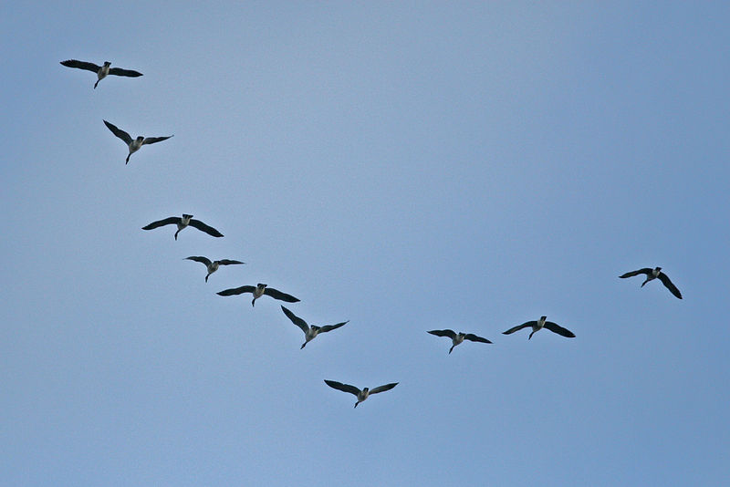
Many bird species migrate to take advantage of global differences of
seasonal temperatures, therefore optimising availability of food sources and
breeding habitat. These migrations vary among the different groups. Many
landbirds, shorebirds, and waterbirds undertake annual long-distance
migrations, usually triggered by the length of daylight as well as weather
conditions. These birds are characterised by a breeding season spent in the
temperate or polar regions and a non-breeding season in the tropical regions
or opposite hemisphere. Before migration, birds substantially increase body
fats and reserves and reduce the size of some of their organs.Migration is
highly demanding energetically, particularly as birds need to cross deserts
and oceans without refuelling. Landbirds have a flight range of around 2,500
km (1,600 mi) and shorebirds can fly up to 4,000 km (2,500 mi),although the
bar-tailed godwit is capable of non-stop flights of up to 10,200 km (6,300 mi).
Seabirds also undertake long migrations, the longest annual migration being
those of sooty shearwaters, which nest in New Zealand and Chile and spend the
northern summer feeding in the North Pacific off Japan, Alaska and California,
an annual round trip of 64,000 km (39,800 mi).Other seabirds disperse after
breeding, travelling widely but having no set migration route. Albatrosses
nesting in the Southern Ocean often undertake circumpolar trips between
breeding seasons.Some bird species undertake shorter migrations, travelling
only as far as is required to avoid bad weather or obtain food. Irruptive
species such as the boreal finches are one such group and can commonly be
found at a location in one year and absent the next. This type of migration
is normally associated with food availability.Species may also travel shorter
distances over part of their range, with individuals from higher latitudes
travelling into the existing range of conspecifics; others undertake partial
migrations, where only a fraction of the population, usually females and
subdominant males, migrates.Partial migration can form a large percentage of
the migration behaviour of birds in some regions; in Australia, surveys found
that 44% of non-passerine birds and 32% of passerines were partially migratory.
Altitudinal migration is a form of short-distance migration in which birds
spend the breeding season at higher altitudes and move to lower ones during
suboptimal conditions. It is most often triggered by temperature changes and
usually occurs when the normal territories also become inhospitable due to
lack of food. Some species may also be nomadic, holding no fixed territory and
moving according to weather and food availability. Parrots as a family are
overwhelmingly neither migratory nor sedentary but considered to either be
dispersive, irruptive, nomadic or undertake small and irregular migrations.
The ability of birds to return to precise locations across vast distances has
been known for some time; in an experiment conducted in the 1950s, a Manx
shearwater released in Boston in the United States returned to its colony in
Skomer, in Wales within 13 days, a distance of 5,150 km (3,200 mi).Birds
navigate during migration using a variety of methods. For diurnal migrants,
the sun is used to navigate by day, and a stellar compass is used at night.
Birds that use the sun compensate for the changing position of the sun during
the day by the use of an internal clock.Orientation with the stellar compass
depends on the position of the constellations surrounding Polaris.These are
backed up in some species by their ability to sense the Earth's geomagnetism
through specialised photoreceptors.
Communication
Birds communicate primarily using visual and auditory signals. Signals can
be interspecific (between species) and intraspecific (within species).Birds
sometimes use plumage to assess and assert social dominance,to display
breeding condition in sexually selected species, or to make threatening
displays, as in the sunbittern's mimicry of a large predator to ward off
hawks and protect young chicks.
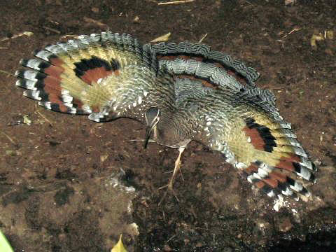
Visual communication among birds may also involve ritualised displays,
which have developed from non-signalling actions such as preening, the
adjustments of feather position, pecking, or other behaviour. These displays
may signal aggression or submission or may contribute to the formation of
pair-bonds.The most elaborate displays occur during courtship, where "dances"
are often formed from complex combinations of many possible component
movements; males' breeding success may depend on the quality of such displays.
Bird calls and songs, which are produced in the syrinx, are the major means by
which birds communicate with sound. This communication can be very complex;
some species can operate the two sides of the syrinx independently, allowing
the simultaneous production of two different songs. Calls are used for a
variety of purposes, including mate attraction,evaluation of potential mates,
bond formation, the claiming and maintenance of territories,the identification
of other individuals (such as when parents look for chicks in colonies or when
mates reunite at the start of breeding season),and the warning of other birds
of potential predators, sometimes with specific information about the nature
of the threat.Some birds also use mechanical sounds for auditory communication.
The Coenocorypha snipes of New Zealand drive air through their feathers,
woodpeckers drum for long-distance communication,and palm cockatoos use tools
to drum.
Flocking and other associations
While some birds are essentially territorial or live in small family
groups, other birds may form large flocks. The principal benefits of
flocking are safety in numbers and increased foraging efficiency.Defence
against predators is particularly important in closed habitats like forests,
where ambush predation is common and multiple eyes can provide a valuable
early warning system. This has led to the development of many mixed-species
feeding flocks, which are usually composed of small numbers of many species;
these flocks provide safety in numbers but increase potential competition
for resources.Costs of flocking include bullying of socially subordinate
birds by more dominant birds and the reduction of feeding efficiency in
certain cases.Birds sometimes also form associations with non-avian species.
Plunge-diving seabirds associate with dolphins and tuna, which push shoaling
fish towards the surface. Some species of hornbills have a mutualistic
relationship with dwarf mongooses, in which they forage together and warn
each other of nearby birds of prey and other predators.
Resting and roosting
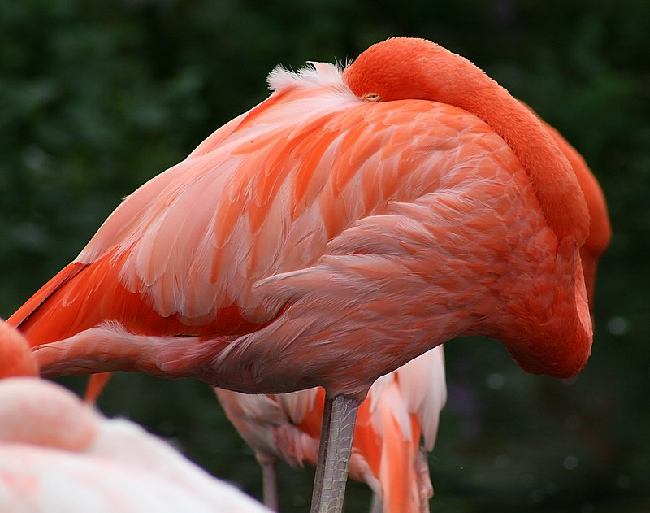
The high metabolic rates of birds during the active part of the day is
supplemented by rest at other times. Sleeping birds often use a type of sleep
known as vigilant sleep, where periods of rest are interspersed with quick
eye-opening "peeks", allowing them to be sensitive to disturbances and enable
rapid escape from threats.Swifts are believed to be able to sleep in flight
and radar observations suggest that they orient themselves to face the wind in
their roosting flight.It has been suggested that there may be certain kinds
of sleep which are possible even when in flight.Some birds have also
demonstrated the capacity to fall into slow-wave sleep one hemisphere of the
brain at a time. The birds tend to exercise this ability depending upon its
position relative to the outside of the flock. This may allow the eye opposite
the sleeping hemisphere to remain vigilant for predators by viewing the outer
margins of the flock. This adaptation is also known from marine mammals.
Communal roosting is common because it lowers the loss of body heat and
decreases the risks associated with predators.Roosting sites are often chosen
with regard to thermoregulation and safety.Unusual mobile roost sites include
large herbivores on the African savanna that are used by oxpeckers.Many
sleeping birds bend their heads over their backs and tuck their bills in their
back feathers, although others place their beaks among their breast feathers.
Many birds rest on one leg, while some may pull up their legs into their
feathers, especially in cold weather. Perching birds have a tendon-locking
mechanism that helps them hold on to the perch when they are asleep. Many
ground birds, such as quails and pheasants, roost in trees. A few parrots of
the genus Loriculus roost hanging upside down.Some hummingbirds go into a
nightly state of torpor accompanied with a reduction of their metabolic rates.
This physiological adaptation shows in nearly a hundred other species,
including owlet-nightjars, nightjars, and woodswallows. One species, the
common poorwill, even enters a state of hibernation.Birds do not have sweat
glands, but can lose water directly through the skin, and they may cool
themselves by moving to shade, standing in water, panting, increasing their
surface area, fluttering their throat or using special behaviours like
urohidrosis to cool themselves.